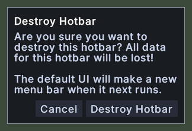
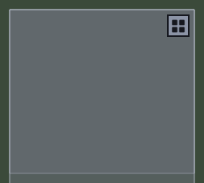
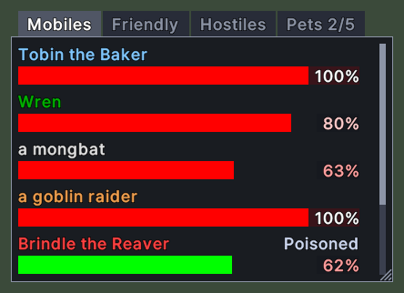
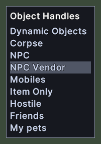
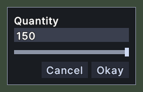
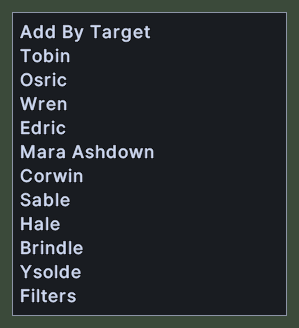

Windows
Every window of the UI, each drawn without the game client. A picture shows the window in one state, with made-up names and items.

Actions
The Actions window lists the things you can put on a hotbar or in a macro that are not a spell, a skill or an item.

Alert
The alert is a banner of red words that pulses across the top of the screen while you are in danger.

Book
The book window is where you read a book, and where you write in one that is yours.

Buffs
The buff bar lists the buffs and debuffs that are running on your character, such as Bless, Curse or Night Sight.

Change Race
The race-change window lets you choose a new look for your character when you use a race-change token.

Channels
The Channels window lists the chat channels that the server offers and shows the one you are in.

Character Sheet
The character sheet lists your stats, one row to a stat, in four groups: Character, Attack, Magic and Defense.

Chat
The chat window shows everything that is said around you and to you, one line after another, each in the colour of its channel.

Chat Line
The chat line is the box that you type on to speak, and it stands under the chat window.

Confirmation
A confirmation is a small box in the middle of the screen that asks you a question before something that is hard to undo, or tells you something that you must read.

Container
A container window shows what is inside a backpack, a bag, a box or a corpse.

Damage Numbers
A damage number shows how much damage a hit did.

Debug Log
The debug log shows the client's own log inside the game, with errors in red, debug lines in yellow, function calls in green and other lines in white.

Distance Counter
The distance counter shows how many tiles away the place under your pointer is, while the game waits for you to choose a target.

Docks
The Docks window lists the creatures near you as health bars, so that you can see who is around and how they are doing.

Dragged Item
The dragged item is the picture that follows your cursor while you carry something.

Dye Colors
The dye palette opens when you use a dye tub on an item.

Equip Items
The equip items window edits the set of items that one hotbar slot puts on.

Equipment Positions
The equipment positions window picks which parts of your body a hotbar slot's equipment action works on.

Find a Place
The place finder looks up a place by name and moves the map to it.

First Run Questions
This window asks a character that is new to this client how to set it up.

Global Chat Friends
The Global Chat window is your friends list for Global Chat.

Harvest With
The Harvest with window sets up a hotbar slot that aims a tool at a kind of resource, such as a pickaxe at ore.

Health Bar
A health bar is a small window that follows one creature's health, and it stays on the screen where you drop it.

Hotbar
A hotbar holds actions that you use with a click or a key, such as spells, skills, items, macros and the shortcuts to this UI's windows.

House Customization
The House Customization window is the designer that opens while you edit a house.

Jewelry Box
The Jewelry Box window shows every piece in a jewelry box at once, in place of the box's own pages of fifty.

Key Prompt
The key prompt is a small box near the top of the screen that asks you to press the key you want for an action.
Macros
The Macros window is where you make and edit your macros.

Map
The map shows the world around you.

Map Legend
The map legend lists the kinds of marker that the map draws.

Menu
A menu is a short list of choices that opens beside the pointer.

Name Plates
A name plate is a small label that floats over an item or a creature near you and tells you its name.

Names and Speech Over Heads
Each creature and player in view has its name over its head, in the colour of its notoriety.

Organizer
The organizer moves items between your open containers by rules.

Paperdoll
The paperdoll shows what a character is wearing, and lets you put gear on and take it off.

Party
The party bar lists everyone in your party, with each member's health.

Party Invite
The party invite asks whether you want to join a party.

Picture Picker
The picture picker lets you choose a picture when there are too many for a menu.

Quantity
The quantity window asks how many items you want to take from a stack.

Quick Stat
A quick stat is a small readout of one stat from the character sheet, kept on the screen where you put it.

Scenery Names
When you click a sign, a banner or another piece of scenery that has a name, its name appears right where you clicked.

Server Dialogs
A server dialog is a window that the game server asks the client to show.

Shop
The shop window is where you buy from a vendor or sell to one.

Skill Tracker
The skill tracker is a small window that keeps your skills in view while you play.

Skills
The skills window lists every skill your character has.

Spellbook
A spellbook window shows the spells of one book, such as a book of Magery, Necromancy or Chivalry.

Status
The status window shows your character's name, health, mana and stamina.

Step Editor
The Step Editor changes one step of a macro: what it does, and when it runs.

Step List
The step list holds every action that a macro step can be, in groups, with a Search box under the title to find one by name.

Submenu
A submenu is a group of choices that flies out beside a row of a menu.

Target
The target window shows what you have targeted.

Text Prompt
The text prompt is a small window that asks you to type an answer, such as a name or a number.

Tooltip
A tooltip is the small box of text that appears when you rest the pointer over something.

Tracking Arrow
The tracking arrow points from the edge of the game view toward a target that the server is pointing you to, such as a creature.

Trade
The trade window is where you and another player swap items and gold.

User Settings
The settings window is where you change how the game and this UI behave.

Waypoints
The waypoints window lists the places that you marked on the map, in the world that the map shows.